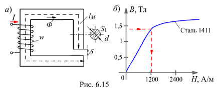

6.3.2.1. Прямая задача
Заданы геометрические размеры магнитной цепи (lM, d, S1, рис. 6,15, а) и магнитные свойства отдельных её участков - кривые намагничивания В(Н) (рис. 6.15, б), например, все они изготовлены из электротехнической стали 1411. Нужно определить магнитодвижущую силу (МДС) F обмотки, необходимую для создания магнитного потока Ф в зазоре.
Примем S1 » S2 и определим магнитную индукцию на участках цепи:
B1 = Ф / S1; Bd = Ф / Sd; B1 = Bd.
Напряжённость магнитного поля на участке lM найдем по кривой намагничивания; например, для стали 1411 при B1 = 1,4 Тл, H1 @ 1200 А/м (рис. 6.15, б); для воздушного зазора напряжённость
Hd » 8Ч105Bd . |
(6.13) |
|---|
Согласно закону полного тока МДС обмотки с числом витков w:
F = H1lM + Hdd = wI.
Выбрав значение тока I, определяют число витков w катушки, или, наоборот, выбрав число витков w катушки, находят значение тока I.
Для приближенных расчётов принимают магнитную индукцию B » 1,2…1,3 Тл и диаметр стержня d » 0,05 м, где S - мощность устройства в кВЧА.
м, где S - мощность устройства в кВЧА.